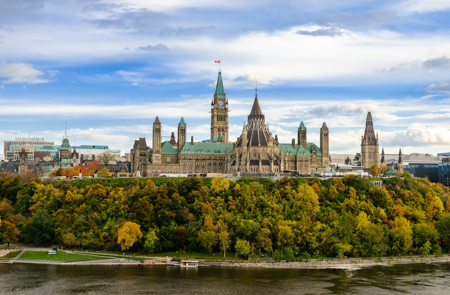
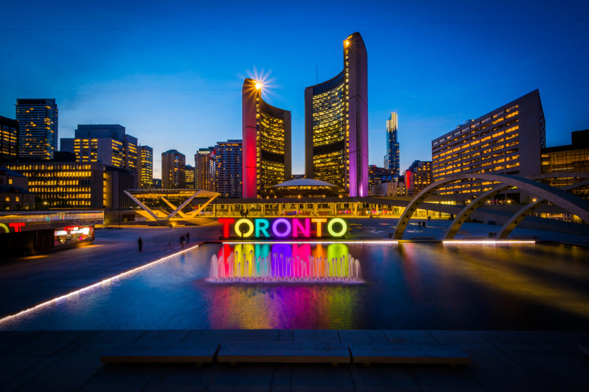
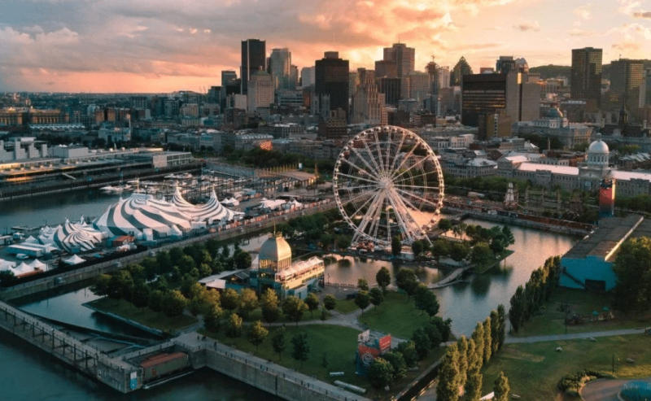
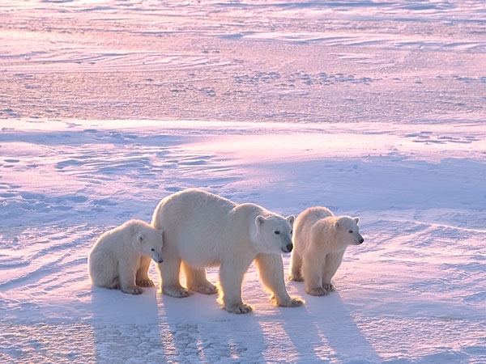
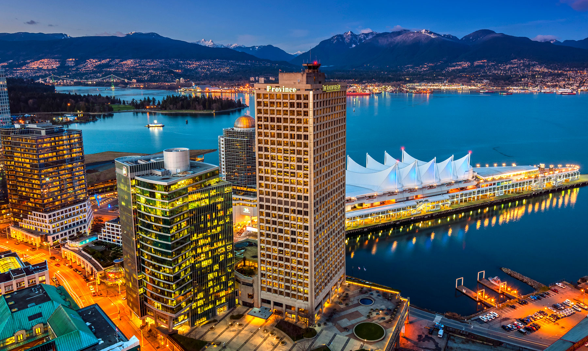
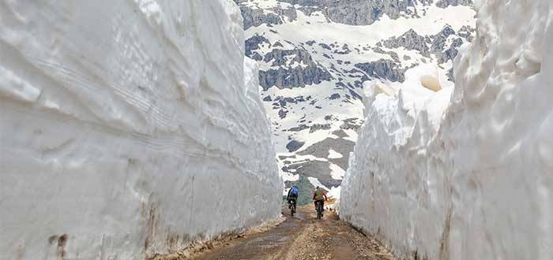
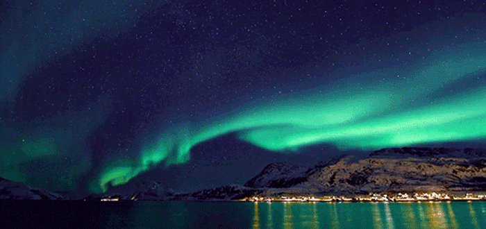
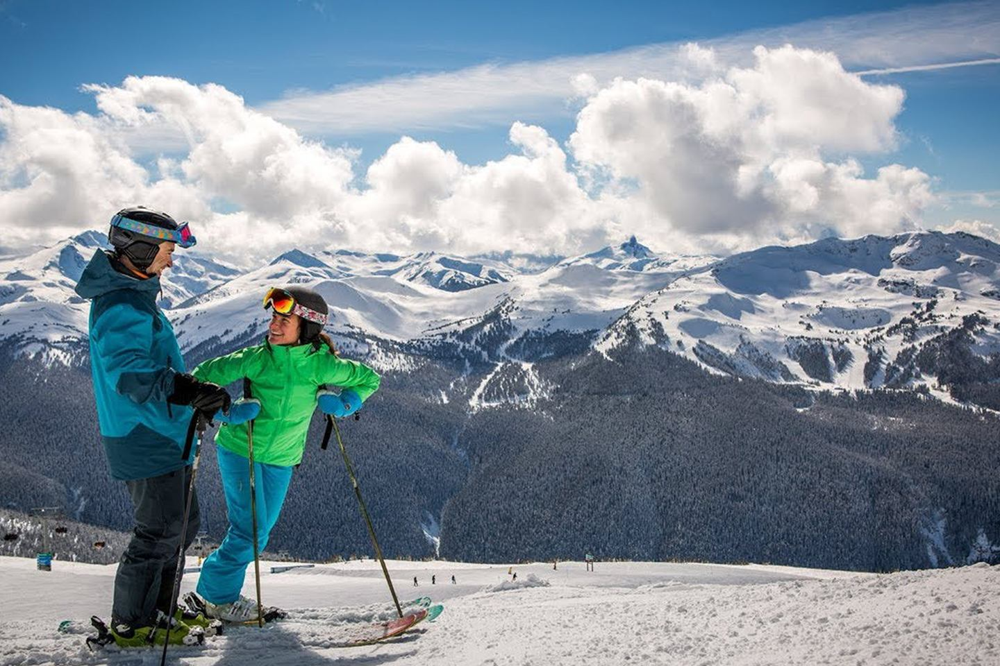
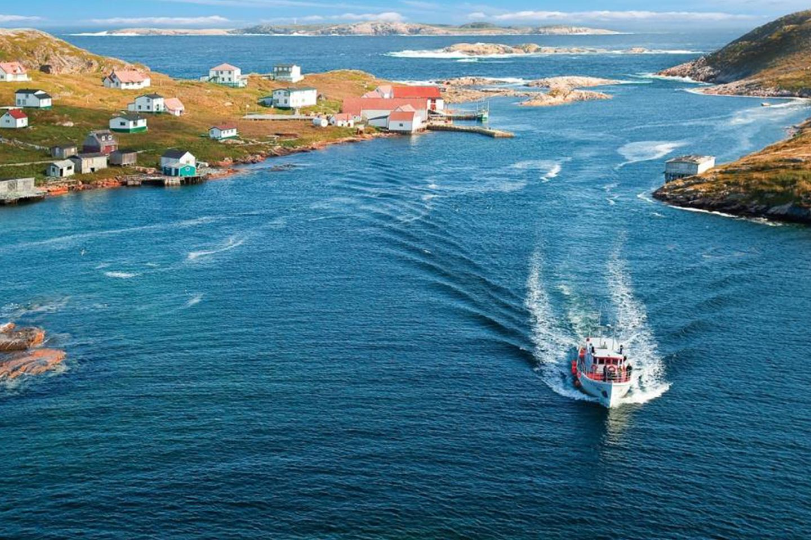

Canadá es una nación bilingüe que ofrece una variedad de actividades y entretenimiento, desde la ciudad de Québec con sus cafés franceses y la arquitectura del siglo XVII, hasta el mundialmente famoso Calgary Stampede. Por lo tanto, Canadá es un excelente destino turístico cuando lo que se busca es pasar unas increíbles vacaciones en familia. Este país ofrece distintos tipos de entretenimientos, tanto para grandes como para chicos.
Provincia de Ontario
Una visita a Canadá quedaría incompleta sin un recorrido por su centro político y diplomático. Ottawa, la capital del país, sirve de hogar al Primer Ministro y a los miembros del Parlamento, así como a cientos de embajadas y delegaciones. A pesar de su pequeño tamaño, Ottawa suele recibir aproximadamente 11 millones de visitantes cada año, y muchos de ellos vienen a buscar las siguientes maravillas que te describimos a continuación:
- El Mercado de Ottawa
- El recorrido por la parte oscura de Ottawa
- El Castillo Fairmont Chateau Laurier
- La Isla Petrie
- La mansión real Rideau Hill
Toronto
Decir Toronto casi equivale a decir Canadá. Usualmente confundida como la capital del país (es Ottawa en realidad), Toronto es la ciudad con más habitantes y mayor extensión territorial de Canadá. Desde los años 70, y luego del declive de la producción económica de Montreal, Toronto tomó la avanzada y no ha cedido su puesto como epicentro económico, cultural y social y es por esto que es el epicentro laboral donde cada año se producen miles de puestos de trabajo. Es el lugar que debes mirar inicialmente si deseas viajar a Canadá para trabajar. Toronto tiene múltiples lugares a los que amarías ir, y posiblemente necesites hasta una semana para visitar todos ellos. A continuación describimos los lugares que no pueden faltar en tu lista:
- La torre CN
- La Islas de Toronto
- La plaza Young-Dundas
- El Distrito de La Destilería
- El Parque Queen’s
- La Galería de Arte de Ontario
- El Mercado Kensington
Cataratas del Niágara

Aunque pueda parecer redundante hablar de este mágico lugar, el costado Canadiense de las Cataratas del Niágara fue, es, y será un lugar que no puedes sacar de tu lista cuando visites Canadá. Una de las siete maravillas del mundo moderno, las aguas del Río Niágara cayendo en picada desde una altura de 57 metros y de 790 metros de ancho roban la atención, admiración y solemnidad de cualquier visitante. Las Cataratas tienen acceso desde los dos lados de la frontera Estadounidense-Canadiense, y la provincia es famosa también por su multitud de casinos y restaurantes ubicados a lado y lado de la caída de agua. Llegar a las cataratas no supone problema, ya que hay infinidad de rutas turísticas, buses y amplias carreteras que conducen desde Toronto. Asegúrate de llevar tu celular entre una bolsita contra agua, ya que no te puedes perder el viaje en bote que lleva cerca a la caída de agua. Solo te tomará un día visitar las cataratas, pero sus imágenes quedarán en ti toda la vida.
Parque Mont Tremblant

El Parque Mont Tremblant es uno de los destinos menos conocidos para extranjeros pero más visitado por los Quebequenses. El Parque está abierto durante las cuatro estaciones del año y se caracteriza por sus espectaculares pistas de ski, la apoteósica vista desde la cima de su Monte Tremblant, sus senderos y caminos que recorren decenas de montañistas cada día, y los deportes acuáticos que se practican con asiduidad en el extenso Lago Tremblant. Sin embargo, la razón por la cual el Parque es tan afamado son los múltiples y estremecedores colores naturales que bañan cada uno de los árboles durante todos los otoños. Si la hoja de maple es el símbolo nacional de Canadá, El Parque Mont Tremblant es el lugar donde debes ir si quieres encontrar las más bellas y furtivas hojas de maple, desperdigadas en toda la extensión de los más de 1500 kilómetros cuadrados del parque. ¡Es un lugar que puedes visitar en un día completo y que te dejará con miles de memorias y fotos para compartir!
Montreal
- El barrio Viejo Montreal
- El Parque y Mirador de Mont Royal
- El Jardín Botánico
- El Parque Jean Drapeau y su circuito de Fórmula Uno
- La Plaza de las Artes
- El barrio Plateau Mont-Royal
- La Basílica de Notre Dame
Provincia de Manitoba
Si lo tuyo es la fauna, y adoras ver animales salvajes en su entorno natural con un mínimo impacto ambiental, ir a Churchill debe estar arriba en tu lista. Este pequeñísimo pueblo ubicado en la Provincia de Manitoba, en el centro de Canadá, tiene un título muy curioso y conocido a nivel mundial: ¡La capital mundial del oso polar! Gracias a su ubicación, a orillas de la famosa e inabarcable Bahía de Hudson, Churchill recibe cada otoño a miles de osos polares que llegan de más al norte de la bahía en busca de alimentación y para la crianza de los bebés osos. ¡Pero no te equivoques! Además del tradicional y mediático oso polar blanco, a Churchill también llegan lobos, osos polares de pelaje negro, alces e innumerable número de especies de aves. Separa unos 4 días de tus vacaciones para conocer todo lo que Churchill ofrece Para llegar a Churchill, deberás tomar un avión desde Manitoba, ya que no hay vías para viajar en carro. El vuelo puede tomar dos horas y media.
Vancouver
Un país que se extiende de costa a costa tiene qué mostrar en cada océano que toca. Vancouver, la tercera ciudad más grande de Canadá, sienta sus bases justo al lado del opulento Océano Pacífico. Vancouver es la ciudad con más proyección económica de la última década, y es con frecuencia seleccionada como la ciudad con mejor calidad de vida del mundo. Vancouver contiene tantos lugares para conocer para visitar que necesitarás unos 5 días para conocerlos todos. Te recomendamos los siguientes:
- La Isla de Vancouver
- El Parque Stanley
- La Playa Kitsilano
- El barrio Gastown
- El Puente Suspendido Capilano
DLake Louise

Situado en el cenit de las montañas rocosas, el Lago Louise es un asombroso cuerpo de agua de estremecedor color turquesa en verano, y un inmaculado color blanco en invierno. El Lago Louise (llamado por las comunidades de las Primeras Naciones como Ho-run-num-nay: el Lago de los Peces Pequeños) se sitúa a cuatro horas y media de la capital de la provincia, Edmonton. El Lago es un lugar predilecto para la práctica del ski en invierno y la práctica del senderismo y la escalada en verano. En su orilla de acceso se sitúa el Hotel Fairmont Chateau Lake Louise, un hotel de lujo construido en 1890. El Lago debe su espléndido color turquesa al fluorito de las rocas que es arrastrado desde los glaciares por el agua que se derrite y que alimenta el Lago.
Túneles de nieve de Whistler
¿Quieres sentirte como en Frozen? Entonces, no te pierdas los túneles de nieve de Whistler. Este laberinto, formado con bloques de hielo, es uno de los lugares turísticos de Canadá que te helará, pero que te encantará. Su recorrido es de, aproximadamente, 2 Km. y es un lugar donde tomar fotos dignas de una galería de arte.
Auroras boreales
Ver el cielo teñido de luces multicolores no tiene precio. Para todo lo demás, existe MasterCard. Bueno, con tu tarjeta, puedes comprar un vuelo barato a Canadá para presenciar este espectáculo único. No olvides que Canadá es de los mejores lugares para ver auroras boreales, así que deja cualquier cosa menos tu cámara. Ah, no creas que puedes ir a cualquier lugar y en cualquier momento. Lo ideal es viajar en otoño o en invierno ya que hay menos horas de sol. Puede que te peles del frío, pero ver estas luces lo merece. Además, es recomendable que viajes hasta Yukon, Yellowknife, Churchill, Nunavut, Kuujjuaq y las Montañas Rocosas, que son excelentes points.
Whistler, Columbia Británica
Whistler es la estación de esquí más grande de Norteamérica, por lo que si eres aficionado a los deportes de invierno, este es tu lugar. En esta, que fuera sede de los Juegos Olímpicos de Invierno de Vancouver en 2010, podrás practicar snowboard, deslizamiento en trineo y salto en esquí. Whistler también es atractiva en verano porque en su altura podrás practicar senderismo, golf, rappel, ciclismo de montaña y pasar un agradable día de campo a orillas del lago Lost.
Isla de Terranova
Perfecto lugar para contemplar uno de los amaneceres más bellos. En la parte más oriental de Canadá, Terranova es una extensa isla poco poblada cuyo principal atractivo turístico es su naturaleza, que guarda icebergs, ballenas y aves en su hábitat natural. Su capital, St. Johns, es una ciudad de coloridas casas que asemejan la arquitectura de San Francisco, California, Estados Unidos. Aunque es el asentamiento más antiguo tiene un aire refrescante y cosmopolita.